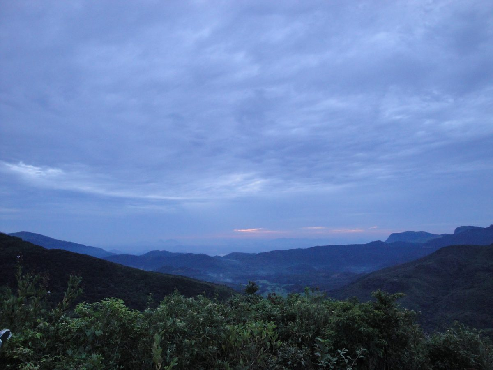

Sri Lanka's top nomad spots
Each base has a different vibe, price point, and internet reliability. Here's the honest breakdown.

Hiriketiya
Best overallA surf bowl on the south coast that punches way above its size. Tight-knit nomad community, good coffee, and surprisingly reliable internet for a beach town.
⚠ Can get crowded Nov–Mar. Rent spikes in peak season.

Ahangama
Best budgetQuieter and cheaper than Hiriketiya, 20 mins up the coast. Growing slowly — good for focused work. Fewer cafes but the ones that exist are solid.
✓ Good year-round. Quieter in shoulder season.

Ella
Hill countryCooler climate (great if you hate the heat), beautiful scenery, and a more diverse traveller scene. Internet is patchier — plan around it. Ideal for 2–4 week stays rather than long-term.
⚠ Power cuts are more frequent here. A UPS is worth it for long stays.